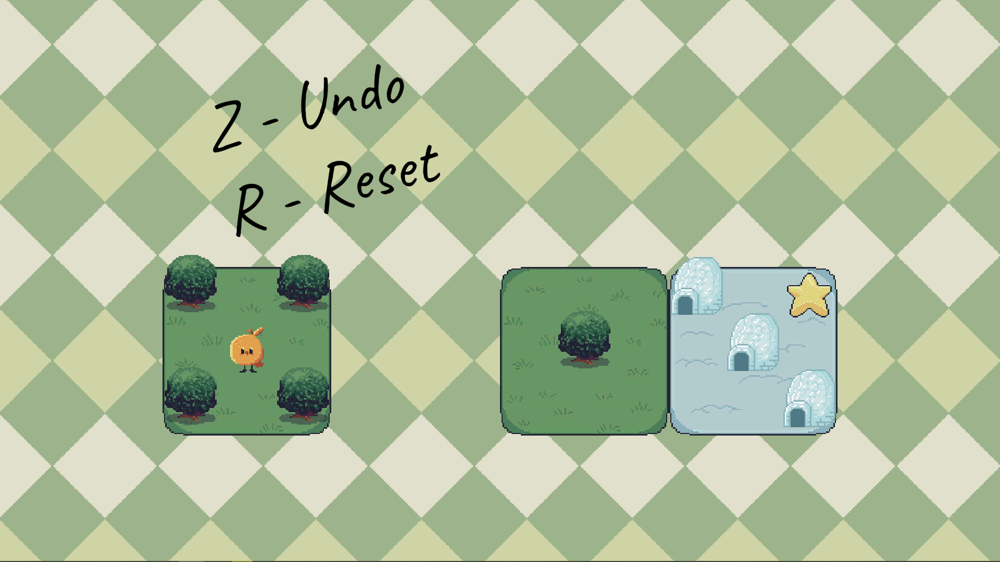
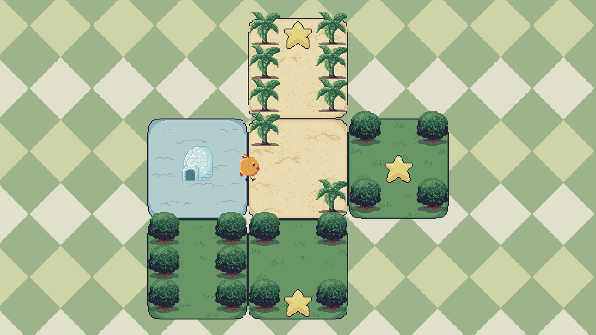

Berb Hike
- Winner of Game Maker's Toolkit 2022 Game Jam
- Developed by myself alongside and artist, I was responsible with programming and design
- Developed in Unity
Berb Hike is a puzzle game developed for GMTK Jam 2022. The theme was "Roll of the Dice", and our take was having a Sokoban style puzzler where you walk across dice faces. Each dice has different mechanics for changing their faces as you walk on them.
The game won the jam, being rated in the top 100 by players, then picked in Mark Brown's shortlist of 20 games.
 